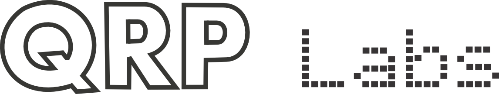

Promoting digital comms excellence for all VarAC enthusiasts
Promoting digital comms excellence for all VarAC enthusiasts
The global VarAC community is excited for the initial running of the SUPERSTATION game. Unlike most amateur radio contests, SUPERSTATION encourages long form QSOs of at least ten minutes over an extended period of time. The game is unique in that it combines having QSOs with a card & dice game as well as the distance of the longest QSO during the contest period.
The high scorer will receive a beautiful full color plaque. The contest’s official sponsor is QRP Labs.
VarAC provides error free keyboard to keyboard communication. Built upon the VARA HF modem, QSOs of -20dB can be achieved. VarAC and SUPERSTATION are free applications. VARA HF is free as well although higher performance can be unlocked with a $75.00 license.
Thank you to QRP Labs for sponsoring the Superstation I contest. 
Mark Rosneck (KB0US) Jason Johnson (K3JSJ)